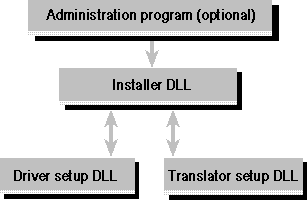

Data sources are configured by the installer DLL, which in turn calls driver setup DLLs and translator setup DLLs as needed. The installer DLL is either invoked directly from the Control Panel or loaded and called by another program, known as the administration program. The following figure shows the relationship between the configuration components.

Configuration components